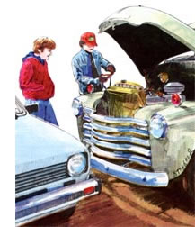
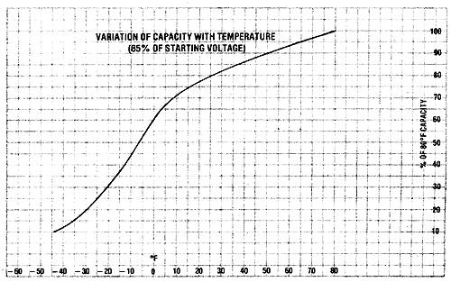
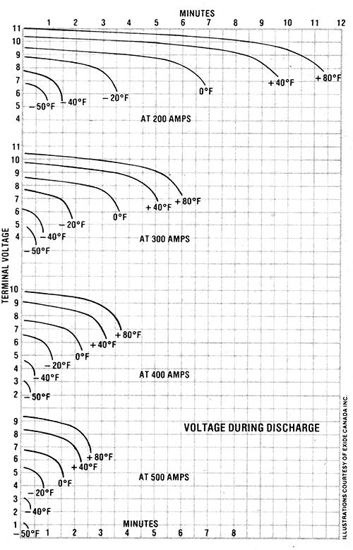

"In a couple of minutes, my car was running, too . . . but I wasn't about to let him get away without an explanation."
The temperature was about 40 below zero, and my car wouldn't start. I cast a hopeful glance at a farmer getting into an old pickup parked next to me . . . he might well be, I thought, the sort of guy who would carry jumper cables.
But his vehicle also failed to start. The engine groaned for a few minutes, and then he simply quit trying. I watched as he climbed out, booster cables in hand, and I cranked down my window when he lifted the hood of his truck.
"If you get someone to boost you," I asked, "can you start me, too?"
"Sure can," he said, "but I won't need a boost."
He proceeded to clip one end of each cable to the appropriate battery terminal and then backed away from the truck, holding the free ends, one in each hand. For about ten seconds, he touched the clamps together. Then he jerked them apart . . . pulled the cables off the battery . . . hopped back into his truck . . . and pressed the starter button. The engine turned and caught easily.
In a couple of minutes, my car was running, too-after a conventional jump from the gentleman's truck-but I wasn't about to let him get away without an explanation. So, while the two vehicles warmed up, I dragged him into a nearby diner for a cup o1 coffee.
ALL YOU HAVE TO DO IS . . .
"It's just a little trick I picked up in the logging camps," he told me. "All you have to do is short the battery out for five to ten seconds. That heats the cells up a bit, and the battery will put out more power when it's warm.
"The heat doesn't last very long, though . . . you've got to get the warmed engine started within a minute or so, or you'll be worse off than you were before.
"Some people call it `bootstrapping', because the battery sort of picks itself up by the bootstraps. Others call it the `screwdriver trick', because you can do it with a screwdriver if you don't have cables.
"I wouldn't use a screwdriver, though you can blow up the battery that way. There was a cook in one of the camps up by Winnipegosis who tried it with a screwdriver . . . and he spent about six months in the hospital getting his face put back together.
"One guy out where I worked had it down to an art: He rigged a set of cables to an old starter switch, so he could short out his battery without getting out of his truck. But I wouldn't try that, either. You don't want to bootstrap any more than you have to."
Ron Jamison-an engineer with Exide Canada Inc--doesn't think people should bootstrap at all, but he can explain how it works:
"The technique uses the battery's internal resistance," says Jamison, "to make it into a heater for a few seconds. On a dead short, the output probably drops to around 2 volts, but you get about 2,000 amps out of a heavy-duty battery. And that translates into about 4,000 watts of heat.
"And all that warmth is right where it counts the most . . . where the electrolyte touches the plates. You can actually raise the temperature of the whole battery by about 2°F, and the temperature at the plates might go up by 10 or 20 °.
"But bootstrapping is dangerous, and we don't recommend it. Short a battery with a screwdriver, and you risk an explosion. There may be free hydrogen around the battery vents, and the spark you get when you make contact could ignite it. A battery explosion is no joke!
"It's safer with booster cables-because you don't strike a spark near the battery but you're still taking a chance. You should never deliberately short a battery."
Maybe you shouldn't, but a 10 to 20° temperature rise at the battery's plates could make the difference between starting a dead car back in the woods, and taking a long, chilly walk. As shown in the top chart on the facing page, lead-acid batteries lose much of their power when they're cold. A battery that puts out full power at 76 °F has about half its rated capacity at five below zero . . . and only about 15% at -35°F!
Let's say your car's been sitting out on a night that hit 10 below, and it won't start because the battery's down to 45% of its rated power. If you can warm the plates 20 ° by bootstrapping, you'll get them up to 10 above . . . where the battery will be back up to about 70% of its rated power. That's a gain of more than half the output available at - 10°F.
COLD TURKEYS
And, believe me, during the winter you need every bit of juice you can get. A modern auto in good condition that requires only 100 amps to get going in the summer would need about twice that amount at 0°F. At 40 below, there'd better be 400 amps on tap . . . even with winter-weight oil in the crankcase.
The car and battery manufacturers know this, of course, and they try to compensate by installing bigger batteries in autos sold in cold climates. The same vehicle that's delivered with a 40 amp-hour battery in middle latitudes may come with a 75 amp-hour unit up North. And even bigger ones are used in northern Canada and Alaska.
Overly large batteries will do the job . . . at least for a while. Any modern car in good tune and with winter-weight oil should start at -40°F on a fully charged, heavy-duty battery. The hitch is that most batteries aren't fully charged in cold weather.
The reason for this is that lead-acid cells are reluctant to take a charge when they're very cold. According to a chart-not shown -from the Battery Council International (the group that sets standards for the industry), a "typical" half-charged battery that will accept 25 amps of charge at 76°F will absorb only about 2 amps at 0°F. On that same chart, there are no figures listed for temperatures lower than 0°F, and for a good reason: When a lead-acid battery's temperature drops below zero, it won't take a charge at all!
One of the rapid chargers offers about 18 volts, which is enough to force a battery to take a charge down to about 0 °F. Below that temperature, however, such a device isn't effective, and you can't exceed the 18volt input without risking damage to the battery. There is a way, though, to get an extremely frigid battery to charge.
THE CHILL IS GONE
A bit of heat makes a big difference, and-in fact-Jamison figures that a lot of perfectly good batteries are junked every winter simply because no one bothers to warm them up long enough to charge them. For example, many people resort to visiting a service station for an hour-long, 50-amp quick "charge" when their cars won't start on cold mornings. The shot of juice will get a car going, and things will usually be OK for the rest of the day. Next morning, though, when the engine refuses to crank again, most people assume that the battery won't hold a charge and is therefore worthless . . . but the fact is that it never was charged.
The battery was stone-cold when it got the 50-amp "push", so most of the power put in was converted to heat. And that "power pack" stayed warm for the rest of the day, simply because the car was run from time to time. The next morning, of course, the electrolyte and plates had cooled off again. On the other hand, if the 50-amp charge had been delivered for two hours one to warm the battery up and another to charge it-the unit would most likely have recovered fully.
NO CRYOGENIC IMMERSION
Actually, a battery that isn't warmed up and fully charged from time to time will eventually lose its ability to take a charge ...through a destructive process called sulfation. All lead-acid batteries produce lead sulfate when they discharge (it's the way they work), but the sulfate is normally reconverted to sponge lead on the negative plate and lead dioxide on the positive plate during recharge. If the battery sits too long without being recharged, though, the crystals of lead sulfate will grow together into bigger and bigger agglomerations of what engineers call "hard sulfate". This compound can't be broken down by charging, and it reduces the cells' capacities (or even shorts them out altogether).
If you leave a battery at half charge for too long, then, you'll wind up with half the capacity for which it was rated. And just how long that "too long" is will depend upon several variables . . . including the battery's construction, the charging current, and even the weather. Because of these factors, however, you should consider your battery safe for only a couple of days when it's partially charged.
The caretakers' answer to this problem is the temperature-sensitive voltage regulator. Current Ford cars, for example, have regulators that are set to charge at 14.0 to 14.4 volts in warm weather, 14.2 to 14.7 at 32°F, and 15.0 at 0°F. Now even 15 volts won't do any good at -20°F, and not much charging will take place even at 0°F, but you just can't put much more into a battery on a regular basis without corroding the plates. Still, cars that are used frequently enough particularly those equipped with rubber cased batteries-will be able to maintain a charge.
This is because the difference between the battery's open-circuit voltage (about 12.6 volts) and the charge rate is converted to heat. Thus, at a 15-volt charge, there are about 2.4 volts available to keep the battery warm. When this heat is combined with that from the engine, and held by the insulation provided by the case, the battery may not cool all the way down at night.
In one test, it took an average-sized car battery 12 hours to cool from 65 °F to 0 °F, with an air temperature of -40°F . . . and if the unit had been next to a warm engine, it probably would have taken longer. (Newer batteries that are equipped with plastic instead of rubber-cases do cool more quickly, though.)
However, even the best rubber-cased batteries don't give you much reserve in cold weather. The bottom chart on the preceding page that was prepared by Exide Canada Inc. shows that a 100-amp-hour unit at 76°F puts out 200 amps for about 11-1/2 minutes . . . with the voltage dropping from 11 to less than 8. When the cells were forced to put out 400 amps at 0 °F, the battery dropped from an 8volt start to 5-1/2 volts in just over two minutes.
AUXILIARY HEATERS
Some people try to beat the cold by installing block heaters on their engines. That's a good idea-good for the motor, that is but it doesn't do much for the battery. Though the engine will start more easily, the battery can still gradually lose power if it isn't warm enough to be recharged by the car's electrical system.
Electric battery heaters-a better choice for northerners-draw about 50 watts (much less than a typical block heater) and come in varieties that can be set under the battery or wrapped around it. With such a heater, you have a warm battery to start with, which gives you a quick, easy start. But-nice as it is-this is almost a side benefit.
You see, the real advantage of a battery heater is that it makes sure the cells are warm and ready to accept a charge-as soon as the car is started. Thus, they'll stay at their peak all winter long. Even if you forget to plug in the heater one night, you'll have a fully charged battery to help the engine get started.
The blanket-type heaters have yet another advantage, in that they insulate the battery as well, so they help out even if you never plug them in. Some northerners, in fact, don't bother with a heater. Instead, they just insulate their batteries with rock wool or rigid high temperature boards. This way, the heat production capabilities of the battery itself-on our 15-volt charging system, that would amount to about 24 watts at a 10-amp rate of charge-can do the warming.
You have to be careful about insulation in the summer or on long drives, though. If the battery temperature gets above 130°F, it will begin to outgas, and will overcharge easily. Most commercial blankets are open on the top to prevent overheating. (On my own car, I use both a blanket and insulation, but nothing on top . . . and I've had no trouble with cross-country driving in the summer.)
MAINTENANCE
If you're going to bother insulating your battery, you might also take some time to check over your wiring. Ron Jamison has some suggestions on this subject, too.
"I've seen a lot of people spend time cleaning off their battery terminals," he says, "but most of them never bother to look at the other ends: the solenoid pole for the positive cable and the ground strap's connection to the car. You can get a lot of' corrosion in those places as well, and it's just as bad as dirty terminals.
"In a harsh climate, it's also a good idea to check the cables themselves, because many cars are built with cable that's too light for winter use. Use a voltmeter for your tests, and if there's a drop of more than about 1/10 volt between the battery the solenoid, get a bigger cable."
If you're going to change that component, by the way, you should consider spending a few extra bucks on welding cable to replace the conventional battery material. Welding cable costs about 25% more, but it's better because it has more strands of wire. Since current is carried on the surface of each strand, more wires mean a greater current carrying capacity . . . even if each wire is smaller. (A 3-0 battery cable from one manufacturer has 259 wires, while a 3-0 welding cable from the same company has 1,672 strands.) In fact, some vehicles built for arctic use come with welding cable as standard equipment.
Jamison also suggests that you check and clean the lead going to your ignition coil. Since this device ups the voltage coming into it by a ratio of about 2,000:1, a loss of one volt at the coil can reduce the spark voltage by 2,000 volts. That could mean the difference between starting and not starting.
For very cold weather, in fact, you might add a separate battery to supply the ignition system. Chrysler considered making the discrete-ignition battery (which would have been built into the regular unit's case) a standard feature about ten years ago.
"The ignition battery doesn't have to be very big-a motorcycle unit would do-but it does have to be separate," says Jamison, "because the main battery may drop to 10 (or even 8) volts when you're cranking the engine."
The auxiliary unit would have to be wired in parallel with the main battery so it could charge from the car's electrical system. A couple of diodes positioned between the two units would make the circuit one-way, and the ignition battery would discharge to the spark system only. (Without these devices, the smaller battery's voltage would drop right along with that of the big one.)
A separate battery shouldn't be necessary in most of the "lower forty-eight", but it might be handy in some areas. Whatever the case, you can get your money's worth out of a battery heater and/or insulation in any climate where freezing weather is common. Even if your car would start every time without these measures, your battery will last longer with them.
And if your battery is in good condition, you'll probably never have to bootstrap it . . . even at 40 below. Bootstrapping will work often enough to make it worthwhile as a last ditch effort . . . but the less you have to use it, the better!
|
 |
 |
 |